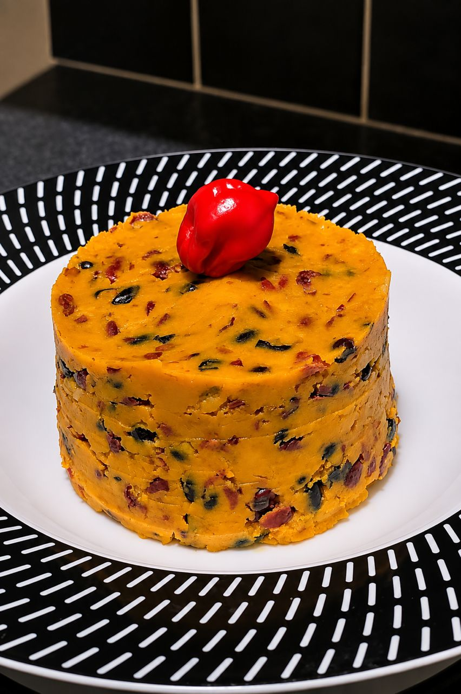

14
Pilé de Pommes de Terre & Haricots
Pounded Potato & Black Beans
A West Cameroonian comfort dish

Description · FR
Le pilé de pommes de terre est un plat traditionnel de l’Ouest Cameroun qui associe des pommes de terre écrasées, des haricots noirs ou rouges et de l’huile de palme. C’est une recette rustique et réconfortante, mais elle demande de bien gérer la texture : les pommes de terre doivent être suffisamment cuites pour être facilement écrasées, tandis que les haricots doivent rester tendres sans se transformer complètement en purée. Pour un débutant, faites cuire chaque élément séparément si nécessaire, puis écrasez les pommes de terre avant de les mélanger progressivement aux haricots et à l’huile. Le résultat recherché est une préparation compacte, moelleuse et bien liée.
Description · EN
Pounded potato is a traditional dish from western Cameroon combining mashed potatoes, black or red beans and palm oil. It is rustic and comforting, but the texture matters: the potatoes should be soft enough to mash easily, while the beans should remain tender without completely turning into purée. For a beginner, cook each component separately if necessary, then mash the potatoes before gradually combining them with the beans and palm oil. The finished mixture should be compact, soft and well bound.
Préparation
Method
- 1Éplucher, couper et cuire les pommes de terre dans l’eau salée jusqu’à ce qu’elles soient tendres.
- 2Laver les haricots noirs, les cuire avec du sel. Réserver.
- 3Égoutter les pommes de terre et les haricots. Les piler ou écraser encore chauds. Incorporer l’huile de palme tout en mélangeant.
- 4Ajouter sel et piment selon votre goût. Mélanger jusqu’à texture homogène. Servir chaud.
- 1Peel, cut and cook the potatoes in salted water until tender.
- 2Wash the black beans, cook with salt. Set aside.
- 3Drain the potatoes and beans. Pound or mash while still hot. Stir in the palm oil.
- 4Season with salt and chilli to taste. Mix until smooth and serve hot.
Téclaire WritesPilez les ingrédients encore très chauds pour une texture plus lisse et une meilleure absorption de l’huile de palme.Pound while still very hot for a smoother texture and better palm oil absorption.